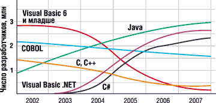
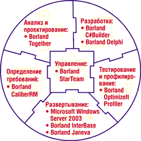
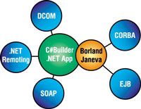

Андрей Колесов
*При подготовке статьи использовались информационные материалы корпорации Borland
Уже два десятилетия корпорация Borland (http://www.borland.com) занимается созданием систем разработки и развертывания программных продуктов. Ее инструменты пользуются неизменным спросом у профессиональных разработчиков ПО, несмотря на сильную конкуренцию, в первую очередь со стороны таких поставщиков платформ, как Microsoft, IBM, Oracle и Sun. Это объясняется не только высоким качеством инструментария Borland, но и неизменностью политики корпорации, направленной на поддержку совместимости и независимости от конкретных фирменных технологий (в том числе унаследованных). Borland не привязывает организации к какой бы то ни было платформе разработки или развертывания, ее стратегия отличается открытостью и предусматривает поддержку широкого спектра технологий, включая J2EE и Enterprise JavaBeans (EJB), CORBA и COM/DCOM, Oracle, IBM DB2 и т. д.
Кроме того, в арсенале Borland есть множество инструментов, которые охватывают весь процесс разработки ПО - от выработки требований до сопровождения. Многими из этих инструментов Borland обязана приобретенным в последнее время компаниям (только за последний год корпорация поглотила шесть компаний). Определенный этап работы по интеграции всех этих продуктов завершился в апреле, когда Borland анонсировала свою стратегию управления жизненным циклом программных продуктов (Application Lifecycle Management, ALM) для Microsoft .NET Framework (см. врезку "ALM - управление жизненным циклом приложений").
ALM - управление жизненным циклом приложенийПо мере повышения сложности программных проектов резко возрастают требования к эффективности их реализации. Это тем более важно сегодня, когда разработчики ПО вовлечены практически во все аспекты работы предприятий и число таких специалистов растет. В то же время данные исследований в этой области говорят о том, что результаты как минимум половины "внутренних" проектов разработки программных средств не оправдывают возложенных на них надежд. В этих условиях становится особенно актуальной задача оптимизации всего процесса создания программных средств с охватом всех его участников - проектировщиков, разработчиков, тестеров, служб сопровождения и менеджеров. Управление жизненным циклом приложений (Application Lifecycle Management, ALM) рассматривает процесс выпуска программных средств как постоянно повторяющийся цикл взаимосвязанных этапов:
Каждый из этих этапов должен тщательно отслеживаться и контролироваться. Правильно организованная ALM-система позволяет:
Разработка программ имеет ту особенность, что, с одной стороны, это процесс итерационный, а с другой - он не всегда последовательно переходит от одного этапа к другому. Зачастую от тестирования разработчики переходят назад к проектированию, затем - к развертыванию, а потом, возможно, вновь возвращаются на этап определения требований по мере изменения производственных потребностей. Кроме того, нужно отметить, что внутренняя организация процесса, в частности, распределение функций и ролей его участников, может сильно варьироваться в зависимости от корпоративных регламентов и специфики конкретных проектов. |
Как заявил президент и генеральный директор Borland Дейл Фуллер, ориентация на платформу .NET Framework объясняется ее растущей популярностью среди заказчиков и разработчиков ПО. В этой связи стоит упомянуть об аналитическом отчете "Наиболее популярные языки программирования для планирования портфеля информационных систем", подготовленном компанией Gartner в сентябре 2002 года. В нем прогнозируется, что количество программистов, использующих языки семейства .NET, к 2007 г. превысит 4 млн (рис. 1), т. е. составит более чем половину программистского населения планеты.
|  | Рис. 1. Динамика и прогноз изменения численности программистов в мире, использующих разные языки (Gartner, сентябрь 2002 г.).
|
Впрочем, хорошие перспективы .NET были в целом очевидны еще в момент объявления этой инициативы Microsoft, и корпорация Borland изначально подключилась к программе Visual Studio .NET Integration Partner. Более того, Borland первой получила лицензию на SDK .NET Framework, именно поэтому предлагаемые ею программные средства для Microsoft .NET Framework созданы не только с учетом стандартов данной платформы, но с использованием ряда ее важных компонентов (например, компиляторов Microsoft).
Вместе с тем исследования показывают, что корпоративные информационные системы (особенно крупные) и в будущем останутся гетерогенными - в большинстве случаев они будут включать не меньше двух конкурирующих платформ разработки или развертывания. Поэтому даже в системе, написанной для Microsoft .NET Framework, скорее всего, будут присутствовать совместная работа и обмен данными с другими программами. Вполне вероятно, что подобную систему придется развертывать в окружении других платформ, таких, как J2EE, и баз данных, предлагаемых конкурентами Microsoft, - IBM DB2 или Oracle.
Реализация ALM-стратегии в исполнении Borland заключается в предоставлении комплекса взаимосвязанных инструментов (см. таблицу) для всех этапов жизненного цикла приложений, таких, как определение требований, анализ и проектирование, разработка, тестирование, развертывание и управление (рис. 2).
Семейство систем Borland ALM, дополняющее .NET Framework
| Название продукта | Назначение |
| Borland CaliberRM | Согласование требований |
| Borland Together | Проектирование программ с помощью UML |
| Borland C#Builder | Разработка на C# с частичной поддержкой VB.NET |
| Borland Delphi (Octane) | Разработка программ на Delphi/Pascal |
| Borland OptimizeIt Profiler | Профилирование программ |
| Borland Janeva | Обеспечение совместимости с Enterprise JavaBeans, J2EE и CORBA |
| Borland InterBase | Реализация встраиваемых баз данных, используемых совместно с Windows Server 2003 |
| Borland StarTeam | Управление: конфигурирование и координация изменений |
|  | Рис. 2. Взаимосвязанные инструменты Borland образуют законченную систему для
управления жизненным циклом приложения.
|
Определение требований
Работа над любым приложением должна начинаться с определения формальных требований к функциям программы, без этого руководитель группы разработчиков не может распределять ресурсы и планировать сроки. Если же план проекта не связан с изначально заданным набором требований, оценить влияние различных изменений на график разработки оказывается непросто. С требованиями должны быть ознакомлены все участники группы - такое понимание общих целей проекта помогает организовать взаимодействие между руководством, разработчиками и будущими пользователями системы.
Необходимо четко определить рамки этой системы и сопоставить пользу, приносимую каждой ее функцией, со стоимостью разработки. Все последующие этапы жизненного цикла программной системы будут обращаться к требованиям - это необходимо для того, чтобы дать аналитикам представление о том, какие элементы системы обязательны и какое влияние на деятельность организации может оказать то или иное изменение.
Для решения этой задачи Borland предлагает средство CaliberRM - полнофункциональную систему согласования требований. CaliberRM тесно интегрируется с системами управления проектами (например, Microsoft Project) и взаимодействует с системой управления конфигурацией Borland StarTeam, что позволяет скоординировать проведение изменений. Определение требований можно использовать в качестве точки отсчета для всех последующих этапов жизненного цикла программного продукта.
Поскольку исходные требования служат основой для последующего проектирования и разработки, следует обеспечить легкий доступ к ним из других этапов жизненного цикла программного продукта. С CaliberRM интегрируются программы Borland StarTeam, Borland Together и Borland C#Builder; в результате все участники группы разработки - в какой бы системе они ни работали - получают сведения о требованиях, очерчивающих рамки проекта и его ожидаемые возможности.
Анализ и проектирование
Эффективность разработки ПО, как и любой другой сложной инженерной работы, в значительной степени зависит от качества анализа задачи и проектирования. Качественное проектирование помогает заложить прочный фундамент всего проекта, способствует общению между работниками, что особенно важно для крупных организаций. Использование стандартных языков моделирования, таких, как UML, не только автоматизирует процесс проектирования, но и упрощает общение всех участников проекта. Недостаточно продуманное проектирование приведет к созданию некачественных программ, в которые со временем станет все сложнее вносить изменения.
Иногда сложно понять, как работает та или иная программа, особенно если она написана давно. Средства проектирования не только помогают разрабатывать новые программы, но и способны создавать визуальные представления существующих систем с целью упростить понимание их устройства и взаимосвязей. Благодаря этому разработчики смогут вносить изменения в программы более эффективно.
Borland Together - это полнофункциональная система анализа и проектирования для архитекторов, проектировщиков и разработчиков. Фирменная технология LiveSource обеспечивает полную синхронизацию изменений, вносимых на всех этапах жизненного цикла проекта разработки. При модификации текстов программ на языках C#, C++ или Visual Basic .NET соответствующим образом изменяется модель программы, а при модификации модели программы адекватно изменяются ее исходные тексты.
Наряду с функциями проектирования в Borland Together имеются возможности аудита программных средств. Это помогает соблюдать требования корпоративных стандартов и исправлять возможные ошибки. Такая функция хорошо дополняет обычные способы инспектирования программных средств и способствует повышению качества ПО.
Borland Together позволяет проводить оценку программ по таким критериям, как размер, сложность и взаимосвязи, упрощая определение приоритетов при тестировании и рефакторинге программных продуктов. Кроме того, делая "моментальные снимки" оценочных измерений программ, команды разработчиков могут судить о развитии своих продуктов, а также о качестве самих работ и процессов.
Разработка
После знакомства с требованиями и выполнения начальных фаз проектирования разработчики могут приступать к написанию программ. Довольно часто эти три этапа образуют постоянный цикл: по ходу разработки программы появляется необходимость внести изменения в ее проект, а иногда и пересмотреть или уточнить требования.
Для редактирования текстов программ и их отладки требуется высококачественная среда разработки (IDE). Она должна работать быстро и не допускать перерывов в процессе написания кода. Необходимо также, чтобы среда поддерживала все возможности платформы, включала различные Мастера и имела полноценный набор готовых компонентов. Разумеется, IDE должна поддерживать весь спектр технологий, которые будет использовать создаваемое приложение. И наконец, что особенно важно, IDE должна уметь работать непосредственно с моделью программы. Без этого разработка может замедлиться, число ошибок в ней - вырасти, поскольку для интерпретации языка моделирования ряд действий потребуется выполнять вручную.
C#Builder
Borland C#Builder для Microsoft .NET Framework (кодовое название проекта Sidewinder) - первый независимый (не вышедший из недр Microsoft) инструмент разработки для .NET на языке C#. В будущем Borland планирует обеспечить ограниченную поддержку Visual Basic .NET для уже существующих проектов и кодов. В C#Builder используются соответствующие лицензионные компиляторы Microsoft .NET Framework (которые в рамках соглашения между двумя компаниями будут обновляться по мере выпуска новых версий).
C#Builder призван стать центром разработки для семейства ALM-систем Borland для .NET. Продукт, созданный с учетом потребностей корпоративных разработчиков, гармонично интегрируется с системами проектирования, тестирования и развертывания. В отличие от Visual Studio .NET, система C#Builder обеспечивает разработчикам возможность интегрировать свои программы для .NET с широким спектром систем, построенных по другим технологиям, в частности, Java, J2EE и CORBA. В состав Borland C#Builder также входят драйверы ADO.NET для таких популярных баз данных, как IBM DB2, Oracle, Microsoft SQL Server 2000 и Borland InterBase.
С помощью встроенной поддержки средств моделирования C#Builder обеспечивает также полную интеграцию с инструментами Borland Together, реализующими итерационное проектирование. Кроме того, предусмотрена основанная на моделях разработка при помощи Borland Enterprise Core Objects (см. соответствующую врезку). Применение этой технологии исключает необходимость в программировании и позволяет значительно сократить сроки разработки. Работу программы определяет собственно модель, при этом качество законченного программного средства повышается, а проектировщики могут быть уверены в том, что программа полностью соответствует первоначально заданным характеристикам модели.
Borland Enterprise Core Objects (ECO)Borland C#Builder поддерживает технологию разработки Borland Enterprise Core Objects (ECO). Функции ECO можно запускать непосредственно из UML-модели без всякого программирования. Единственное, что потребуется написать на C#, - пользовательский интерфейс. Вся бизнес-логика содержится в самой модели и даже не видна как программа на C#.
Подобная технология разработки резко повышает производительность труда, устраняя необходимость в программировании. К тому же программа здесь всегда соответствует проекту, так что можно будет выполнять даже весьма существенные изменения в логике работы системы без риска внести в программу ошибки. Программные средства с использованием ECO можно создавать при помощи C#Builder, а затем эти компоненты могут быть интегрированы с программами, написанными в среде Microsoft Visual Studio .NET. Таким образом, C#Builder будет удобно использовать при работе над частями крупного корпоративного проекта, что приведет к существенному повышению производительности труда. Для создания модели разработчики могут воспользоваться системой проектирования Borland Together. |
Borland Delphi
Уже в предварительной версии система Delphi for .NET позволяет создавать программы для .NET Framework. В конце нынешнего года должна выйти новая версия Delphi, известная пока под кодовым названием Octane (название подчеркивает, что Delphi впервые вышла на рынок восемь лет назад). Как и предыдущие версии Delphi, Octane будет работать с библиотеками Visual Component Library (VCL) и Component Library for Cross-platform (CLX) для Win32. Однако наиболее значительные усовершенствования будут связаны с .NET (первое средство поддержки .NET, компилятор языка Delphi для .NET, появилось в прошлогодней Delphi 7 Studio, но лишь в виде предварительного варианта). С помощью Octane будут создаваться программы, полностью совместимые с .NET и при этом использующие все возможности языка Delphi. В числе прочего продукт предусматривает комплексную визуальную разработку в рамках .NET Framework, поддерживает технологии Windows Forms, ASP.NET Web Forms, Web-сервисы и ADO.NET.
Кроме того, в состав Octane войдет специальная версия VCL, позволяющая переносить под .NET программы, написанные для библиотеки Win32. VCL для .NET - это обширное подмножество основных классов VCL для Win32. Borland обещает обеспечить высокую совместимость между этими вариантами библиотек, хотя предупреждает, что в ряде случаев (например, при прямом обращении к Win32 API) тексты программ, возможно, придется корректировать вручную.
Пакеты Delphi и C#Builder построены на базе нового ядра IDE для Windows, поддерживающего несколько различных систем разработки для Win32 и .NET. Поэтому программисты, пользующиеся Delphi, смогут сразу же начать работать с C#Builder, а внешний вид C#Builder можно настроить на привычный манер Delphi. И наконец, в состав Octane войдут Delphi-версии специальных функций и инструментов Borland для .NET, которые будут впервые использованы в C#Builder.
Испытание и профилирование
Наиболее важные характеристики критичных для бизнеса программных систем - это скорость, стабильность и надежность. Упрощая разработку программных систем, .NET Framework в то же время вводит в обиход еще один технологический уровень, который ограничивает контроль разработчиков над производительностью их систем. Поэтому крайне важным для поддержания должного уровня производительности и надежности становится регулярное использование средств контроля производительности на всех этапах процесса разработки.
Пакет Borland OptimizeIt Profiler для Microsoft .NET Framework предназначен для управления эксплуатационными характеристиками корпоративных программных средств. В тесной интеграции с Borland C#Builder и Microsoft Visual Studio .NET этот продукт поддерживает все языки программирования, с которыми работает .NET, - C#, Visual Basic .NET и "управляемый" (managed) C++. OptimizeIt Profiler обеспечивает профилирование рабочих параметров программ в реальном времени, что помогает разработчикам оперативно устранять ошибки, приводящие к снижению производительности.
За счет повышения производительности на ранних этапах разработки предприятия могут добиться большей эффективности при развертывании программных систем. Эта методика исключает возникновение глубинных проблем, приводящих к снижению производительности и угрожающих всему проекту. Она также снижает затраты на диагностику и решение проблем с производительностью в процессе сопровождения приложения. OptimizeIt Profiler рекомендуется использовать в качестве компонента жизненного цикла программ как средство снижения риска разработки.
Развертывание и сопровождение
В большинстве организаций программные продукты для .NET будут внедряться в разнородные информационные системы, в рамках которых приходится задействовать возможности уже имеющихся технологий J2EE и CORBA. Для совместимости различных платформ используются Web-сервисы и подобные им технологии, реализующие альтернативные способы обмена данными. Однако они могут обладать недостаточной производительностью, защищенностью или функциональностью (например, в случае необходимости управления транзакциями).
Borland Janeva - продукт, решающий все эти вопросы. При помощи масштабируемого и защищенного протокола Internet Inter-ORB Protocol (IIOP) Janeva позволяет клиентским и серверным программам для Microsoft .NET работать с серверными компонентами инфраструктур J2EE и CORBA (рис. 3).
|  | Рис. 3. Borland Janeva позволяет без посредников подключать системы на .NET к программам, использующим EJB и CORBA.
|
Borland Janeva тесно интегрируется в среды разработки Borland C#Builder и Microsoft Visual Studio .NET. Для внедрения этого продукта не нужен опыт работы с J2EE или CORBA, не требуется также никаких изменений в серверных системах. Подобная реализация взаимной совместимости снижает уровень риска и упрощает интеграцию новых программных средств для .NET в имеющиеся корпоративные инфраструктуры.
Базы данных
В основе практически каждой корпоративной программной системы лежит база данных, поэтому выбор СУБД влияет на стоимость текущего сопровождения системы в период ее производительной работы (иногда этот период длится многие годы). Borland дает разработчикам возможность выбирать базу данных, наиболее подходящую для того или иного проекта.
Borland InterBase - это мощная встраиваемая база данных, сертифицированная для Microsoft Windows Server 2003 и обеспечивающая высокую производительность при интеграции с Borland C#Builder и Borland Together. Кроме того, этот продукт открыт для использования в Microsoft Visual Studio (см. статью "Borland InterBase 7 для построения масштабируемых систем", BYTE/Россия N 6'2003). Хорошая функциональность в сочетании с невысокими требованиями к сопровождению и к ресурсам делает СУБД Borland InterBase привлекательной для использования в тиражируемых программных системах. InterBase использует технологию Borland Data Provider, упрощающую подключение самых разных баз данных к C#Builder при создании программных средств на базе .NET Framework. Разработчики, пользующиеся Visual Studio .NET, также смогут применять InterBase вместо SQL Server.
Согласование изменений и управление конфигурацией
Реализация сложных программных проектов требует эффективных средств управления всеми этапами работ. Необходимы также механизмы поддержки общения работников (к примеру, дискуссионные форумы) и средства отслеживания возникающих проблем, дефектов и изменений в проекте. Без этого руководители групп не получают адекватного представления о ходе разработки, в результате теряется контроль над процессом и в конечном счете сроки разработки срываются.
Средства управления конфигурацией позволяют группам сопровождения при необходимости возвращать измененную программную систему в исходное состояние. С их помощью значительно упрощается настройка системы для точного воспроизведения той или иной проблемы. При этом разработчики смогут одновременно поддерживать два или более параллельных пути развития программы.
Borland StarTeam - полнофункциональная система согласования изменений и управления конфигурацией, предназначенная для крупных организаций, в том числе для поддержки географически распределенных проектных групп. Эта система, изначально рассчитанная на работу через Интернет, централизованно хранит все проектные материалы и отслеживает их использование. Продукт предоставляет предприятиям широкие возможности управлять информационными активами при помощи соответствующих контрольных замеров и аудиторских проверок.
Управление конфигурацией - центральная часть разработанной Borland системы управления жизненным циклом программных продуктов. StarTeam непосредственно интегрируется с другими системами Borland - CaliberRM, Together и C#Builder.
Не только .NET
Продукты Borland для платформы Microsoft .NET не только хорошо взаимодействуют друг с другом, но и сочетаются с различными инструментами других поставщиков. При этом возможны два варианта интеграции - функциональная и синергетическая.
Функциональная интеграция позволяет обратиться к каждой из систем, всего лишь выбрав соответствующий пункт в меню. Она гарантирует совместимость и автоматическое преобразование между различными форматами данных. Например, всеми функциями интерфейса системы управления конфигурацией StarTeam можно воспользоваться непосредственно из Together, C#Builder или Visual Studio .NET. Это не только поощряет разработчиков к использованию функций контроля текстов программ, но и упрощает весь процесс, что особенно важно, если руководители групп желают добиться целостности разрабатываемых ими систем.
Чтобы сделать этапы процесса разработки еще более взаимосвязанными, Borland применяет синергетическую интеграцию. Подобный тип интеграции позволяет прозрачно сочетать функции двух различных продуктов. Разработчик может даже не догадываться, что он работает с несколькими продуктами, а не с одним. Пример такой интеграции - взаимосвязь между C#Builder и Janeva. Установив Janeva, можно непосредственно конвертировать код J2EE в .NET и наоборот, и при этом разработчикам не потребуется осваивать никаких сложных механизмов преобразования.
Пример интеграции с продуктами других поставщиков - работа с Visual Studio .NET. Каждая из ALM-систем Borland реализует оба варианта интеграции с этим инструментом Microsoft. При этом возможны сценарии совместного использования VS.NET и C#Builder или только одного из них. Например, используя VS.NET в сочетании с Janeva, разработчики могут создавать .NET-приложения, способные взаимодействовать с инфраструктурами на базе J2EE и CORBA.
Информационные системы многих организаций неоднородны: в них работают программы не только для Windows, но и для Java, Linux и других платформ. Borland предлагает средства разработки для всех популярных современных платформ - Delphi и C++Builder (Windows), Kylix (Linux), JBuilder (Java и Enterprise JavaBeans), C#Builder (.NET Framework). Borland также предлагает системы для всех других этапов жизненного цикла программных продуктов, создаваемых для трех указанных платформ. Например, Borland Together обладает богатыми возможностями UML-проектирования и моделирования для Java и C#, а система управления конфигурацией Borland StarTeam работает с клиентскими программами для Windows, Linux и Unix. Janeva обеспечивает взаимную совместимость на этапе развертывания программных систем для .NET на базе "тонких" или "толстых" клиентов.
Для интеграции разнородных систем Borland предлагает решения, функционирующие на нескольких уровнях. Высокоуровневой интеграции можно достичь при помощи Web-сервисов на базе протокола SOAP. Эта стандартная методика может применяться к большинству технических платформ. На низком уровне можно использовать продукт Janeva, который применяет для связи между программами протокол IIOP, применяемый в J2EE и CORBA и обладающий лучшими характеристиками по сравнению с SOAP.
В качестве альтернативного подхода можно разработать модель бизнес-системы, а затем создать различные компоненты этой системы, предназначенные для различных платформ. Например, Borland Together позволяет выводить программные тексты как на C#, так и на Java, поэтому на основе одной UML-модели с помощью этой системы можно создавать программные средства на любом из этих двух языков.
Последние новости с JavaOne
Во время проведения в начале июня в Сан-Франциско конференции JavaOne Borland объявила о том, что ее программные средства полностью реализуют ALM-стратегию для Java-продуктов. Стало также известно, что корпорация заключила с ведущими игроками на рынке Java ряд стратегических соглашений. Их цель - поддержать собственную ALM-стратегию и обеспечить разработку большого количества взаимно совместимых систем, предназначенных для создания Java-программ, работающих в реальном времени. Там же Borland анонсировала выпуск новой версии продукта Enterprise Studio 6 для Java.
Кроме того, учитывая динамичность мирового рынка мобильных средств, Borland включила в число предлагаемых ею продуктов Borland JBuilder 9 Mobile Edition, Borland Mobile Studio и Borland Enterprise Studio for Mobile, позволяющие разработчикам оперативно создавать и развертывать мобильные системы. Для дальнейшего укрепления своего положения на рынке разработки для мобильных систем Borland также заключила соглашение с Sony Ericsson, предусматривающее распространение и поддержку Sony Ericsson Java SDK совместно с Borland JBuilder 9 Mobile Edition.
Borland - курс на корпоративных разработчиковВ начале июня в Москве прошел семинар разработчиков, на котором Borland представила реализацию своей ALM-стратегии для .NET и J2EE. В мероприятии принял участие вице-президент Borland по связям с разработчиками Дэвид Интерсимон, имеющий также титул Chief Evangelist (старший проповедник) корпорации. Вот несколько цитат из его выступления. "Развитие средств разработки Borland определяется ориентацией на корпоративных разработчиков ПО, с учетом их требований к средствам создания программ. Для этого Borland реализует три основные стратегические линии. Первая - поддержка широкого круга технологий и платформ, вторая - предложение полного комплекса инструментов для всего жизненного цикла программ, третья - максимальное использование модельных методов разработки. Но, говоря о нашей нацеленности на крупных заказчиков, мы уверены, что продукты Borland полезны и доступны даже для небольших команд разработчиков". "Одна из главных задач Borland сегодня - повысить авторитет, узнаваемость торговой марки нашей корпорации. Мировое и российское сообщество разработчиков хорошо знают наши инструменты и уверены в нас. Но решения об использовании того или иного инструментария сегодня принимают руководители, которые порой говорят: "Borland? Да, хорошая была компания...". Такие суждения - следствие наших прошлых маркетинговых ошибок, недостаточного внимания к пропаганде, рекламе наших продуктов. Мы исправляем эту ситуацию и хотим сказать всем: Borland остается одним из ведущих игроков на рынке инструментальных средств, мы активно расширяем свой бизнес и предлагаем сегодня уникальный набор продуктов для полного управления жизненным циклом приложений, для всех основных платформ разработки и развертывания информационных систем". |